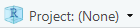

4 Opening and exploring data
4.1 Styles of R coding
Up to this point, beyond the style tips sprinkled through these notes, we have not thought about the style of R coding we will be using. There are different approaches to R coding that we can use, they can be thought of as different dialects of the R programming language.
The choice of R ‘dialect’ depends on personal preference. Some prefer to use the ‘base R’ approach that does not rely on any packages that may need updating, making it a more stable approach. However, base R can be difficult to read for those not comfortable with coding.
The alternative approach that we will be adopting in this course is the ‘tidyverse’ approach. Tidyverse is a set of packages that have been designed to make R coding more readable and efficient. They have been designed with reproducibility in mind, which means there is a wealth of online (mostly free), well-written resources available to help use these packages. Tidyverse is also the preferred coding style of the Government Analysis Function guidance.
If you have not done so already, install the Tidyverse packages to your machine using the following code:
install.packages('tidyverse')
Warning
This can take a long time if you have never downloaded the tidyverse packages before as there are many dependencies that are required.
Do not stress if you get a lot of text in the console! This is normal, but watch out for any error messages.
Once the tidyverse package is installed, we must load it into the current working session. At the beginning of your script file add the following syntax:
pacman::p_load(tidyverse)
Style tip
The double colon in R can be used to run a function within an installed package without loading the entire package to an R session.
4.2 The working directory
The working directory is a file path on your computer that R sets as the default location when opening, saving, or exporting documents, files, and graphics. This file path can be specified manually but setting the working directory saves time and makes code more efficient.
The working directory can be set manually by using the Session -> Set Working Directory -> Change Directory… option from the drop-down menu, or the setwd function. Both options require the directory to be specified each time R is restarted, are sensitive to changes in folders within the file path, and cannot be used when script files are shared between colleagues.
An alternative approach that overcomes all these issues is to create an R project.
4.2.1 R projects
R projects are files (saved with the .Rproj extension) that keep associated files (including scripts, data, and outputs) grouped together. An R project automatically sets the working directory relative to its current location, which makes collaborative work easier, and avoids issues when a file path is changed.
Projects are created by using the File -> New project option from the drop-down menu, or using the  icon from the top-right corner of the RStudio interface. Existing projects can be opened under the File -> Open project… drop-down menu or using the project icon.
When creating a new project, we must choose whether we are creating a new directory or using an existing one. Usually, we will have already set up a folder containing data or other documents related to the analysis we plan to carry out. If this is the case, we are using an existing directory and selecting the analysis folder as the project directory.
Style tip
Have a clear order to your analysis folder. Consider creating separate folders within a project for input and output data, documentation, and outputs such as graphs or tables.
4.3 Loading data
To ensure our code is collaborative and reproducible, we should strive to store data in formats that can be used across multiple platforms. One of the best ways to do this is to store data as a comma-delimited file (.csv). CSV files can be opened by a range of different softwares (including R, SPSS, STATA and excel), and base R can be used to open these files without requiring additional packages.
Unfortunately, we are not always able to choose the format that data are stored in. For example, the English Housing Survey (EHS) data is stored as a .sav (SPSS) data file. Fortunately for us, R has a wide range of packages that have been developed to load data from every conceivable format.
The package that we will be using the load SPSS data is the haven package. To ensure this is loaded in at the beginning of each session, adapt the previous p_load function:
pacman::p_load(tidyverse, haven)To avoid any errors arising from spelling mistakes, we can use the list.files function, which returns a list of files and folders from the current working directory. The file names can be copied from the console and pasted into the script file. As the data are saved in a folder within the working directory, we add the argument path = to specify the folder we want to list files from.
list.files(path = "data")[1] "Detailed_forecast_tables_Economy_March_2024.xlsx"
[2] "generalfs21_EUL.sav"
[3] "interviewfs21_EUL.sav" The first data set we will load is thegeneralfs21_EUL.sav file. This contains general information taken from the English Housing Survey (EHS) from 2021, including a unique identifier, the responders’ region, and the tenure type.
The EHS data can be loaded into R using the read_spss function, and saved as an object using the <- symbol:
ehs_general <- read_spss(file = "Data/generalfs21_EUL.sav")The imported data will appear in the environment with its given name. The contents of the object can be viewed by clicking on the object name in the environment, opening a tab next to script files. This window is a preview so cannot be edited here.
Some useful functions that can be used to explore a dataset include:
# Return variable names
names(ehs_general)[1] "serialanon" "aagfh21" "paired" "tenure8x" "tenure4x"
[6] "tenure2x" "gorehs" "region3x" "govreg1" # Returns the first 6 rows
head(ehs_general)# A tibble: 6 × 9
serialanon aagfh21 paired tenure8x tenure4x tenure2x gorehs region3x
<dbl+lbl> <dbl+lbl> <dbl+lbl> <dbl+lb> <dbl+lb> <dbl+lb> <dbl+lb> <dbl+lb>
1 20220000001 3934. 1 [Paired] 1 [owne… 1 [owne… 1 [Priv… 7 [Eas… 3 [Rest…
2 20220000005 1580. 1 [Paired] 1 [owne… 1 [owne… 1 [Priv… 10 [Sou… 3 [Rest…
3 20220000006 3360. 1 [Paired] 1 [owne… 1 [owne… 1 [Priv… 6 [Wes… 3 [Rest…
4 20220000012 1368. 0 [Not pai… 1 [owne… 1 [owne… 1 [Priv… 5 [Eas… 3 [Rest…
5 20220000013 9847. 1 [Paired] 1 [owne… 1 [owne… 1 [Priv… 10 [Sou… 3 [Rest…
6 20220000017 3262. 0 [Not pai… 1 [owne… 1 [owne… 1 [Priv… 6 [Wes… 3 [Rest…
# ℹ 1 more variable: govreg1 <dbl+lbl># Returns the last 6 rows
tail(ehs_general)# A tibble: 6 × 9
serialanon aagfh21 paired tenure8x tenure4x tenure2x gorehs region3x
<dbl+lbl> <dbl+lbl> <dbl+lbl> <dbl+lb> <dbl+lb> <dbl+lb> <dbl+lb> <dbl+lb>
1 20220031393 262. 0 [Not pai… 3 [loca… 3 [loca… 2 [Soci… 7 [Eas… 3 [Rest…
2 20220031396 5741. 1 [Paired] 1 [owne… 1 [owne… 1 [Priv… 6 [Wes… 3 [Rest…
3 20220031401 1579. 0 [Not pai… 1 [owne… 1 [owne… 1 [Priv… 6 [Wes… 3 [Rest…
4 20220031402 2178. 0 [Not pai… 1 [owne… 1 [owne… 1 [Priv… 9 [Sou… 2 [Lond…
5 20220031408 1133. 1 [Paired] 1 [owne… 1 [owne… 1 [Priv… 10 [Sou… 3 [Rest…
6 20220031409 1879. 1 [Paired] 1 [owne… 1 [owne… 1 [Priv… 10 [Sou… 3 [Rest…
# ℹ 1 more variable: govreg1 <dbl+lbl># Gives information about the structure of an object (including variable types)
str(ehs_general)tibble [9,752 × 9] (S3: tbl_df/tbl/data.frame)
$ serialanon: dbl+lbl [1:9752] 2.02e+10, 2.02e+10, 2.02e+10, 2.02e+10, 2.02e+10, 2.0...
..@ label : chr "Key variable: unique archived identifier"
..@ format.spss : chr "F11.0"
..@ display_width: int 13
..@ labels : Named num [1:2] -9 -8
.. ..- attr(*, "names")= chr [1:2] "Does not apply" "No Answer"
$ aagfh21 : dbl+lbl [1:9752] 3934, 1580, 3360, 1368, 9847, 3262, 6584, 389, 4193,...
..@ label : chr "Household weight 2021"
..@ format.spss : chr "F8.2"
..@ display_width: int 10
..@ labels : Named num [1:2] -9 -8
.. ..- attr(*, "names")= chr [1:2] "Does not apply" "No answer"
$ paired : dbl+lbl [1:9752] 1, 1, 1, 0, 1, 0, 0, 0, 1, 1, 0, 1, 1, 1, 1, 0, 0, 1,...
..@ label : chr "Whether paired sample case"
..@ format.spss: chr "F3.0"
..@ labels : Named num [1:4] -9 -8 0 1
.. ..- attr(*, "names")= chr [1:4] "Does not apply" "No Answer" "Not paired" "Paired"
$ tenure8x : dbl+lbl [1:9752] 1, 1, 1, 1, 1, 1, 1, 1, 2, 1, 1, 4, 1, 4, 1, 1, 2, 4,...
..@ label : chr "Tenure with vacancy"
..@ format.spss : chr "F2.0"
..@ display_width: int 10
..@ labels : Named num [1:10] -9 -8 1 2 3 4 5 6 7 8
.. ..- attr(*, "names")= chr [1:10] "Does not apply" "No Answer" "owner occupied - occupied" "private rented - occupied" ...
$ tenure4x : dbl+lbl [1:9752] 1, 1, 1, 1, 1, 1, 1, 1, 2, 1, 1, 4, 1, 4, 1, 1, 2, 4,...
..@ label : chr "Tenure"
..@ format.spss : chr "F2.0"
..@ display_width: int 10
..@ labels : Named num [1:6] -9 -8 1 2 3 4
.. ..- attr(*, "names")= chr [1:6] "Does not apply" "No Answer" "owner occupied" "private rented" ...
$ tenure2x : dbl+lbl [1:9752] 1, 1, 1, 1, 1, 1, 1, 1, 1, 1, 1, 2, 1, 2, 1, 1, 1, 2,...
..@ label : chr "Tenure"
..@ format.spss : chr "F2.0"
..@ display_width: int 10
..@ labels : Named num [1:4] -9 -8 1 2
.. ..- attr(*, "names")= chr [1:4] "Does not apply" "No Answer" "Private" "Social"
$ gorehs : dbl+lbl [1:9752] 7, 10, 6, 5, 10, 6, 4, 10, 7, 2, 10, 2, 2, ...
..@ label : chr "Government Office Region EHS version"
..@ format.spss: chr "F2.0"
..@ labels : Named num [1:11] -9 -8 1 2 4 5 6 7 8 9 ...
.. ..- attr(*, "names")= chr [1:11] "Does not apply" "No answer" "North East" "North West" ...
$ region3x : dbl+lbl [1:9752] 3, 3, 3, 3, 3, 3, 1, 3, 3, 1, 3, 1, 1, 3, 1, 2, 3, 1,...
..@ label : chr "Overall region of England"
..@ format.spss : chr "F2.0"
..@ display_width: int 10
..@ labels : Named num [1:5] -9 -8 1 2 3
.. ..- attr(*, "names")= chr [1:5] "Does not apply" "No Answer" "Northern regions" "London and South East regions" ...
$ govreg1 : dbl+lbl [1:9752] 4, 4, 2, 2, 4, 2, 1, 4, 4, 1, 4, 1, 1, 2, 1, 4, 4, 1,...
..@ label : chr "Government office Region, grouped"
..@ format.spss : chr "F2.0"
..@ display_width: int 9
..@ labels : Named num [1:6] -9 -8 1 2 3 4
.. ..- attr(*, "names")= chr [1:6] "Does not apply" "No Answer" "North" "Midlands" ...
- attr(*, "notes")= chr [1:6] "This third delivery file (interviewfs21.sav)" "was updated on 29/11/22" " (Entered 01-Dec-2022)" "This third delivery file (interviewfs21.sav)" ...The str function tells us that this object is a tibble. This is tidyverse language for a data set (in base R, it is known as a data.frame). All variables are recognised as dbl + lbl, or labelled double variables. Double is tidyverse language for numeric data, and labels are taken from the original SPSS data.
It is important to check that R has correctly recognised variable type when data are loaded, before generating any visualisations or analysis. If variables are incorrectly specified, this could either lead to errors or invalid analyses. We will see how to change variables types later in this chapter.
The variables in this tibble contain additional information, stored as attributes. Data imported from other sources do not typically include these attributes by default, but these are able to uphold any information that was stored in the ‘Variable view’ window of SPSS.
4.4 Selecting variables
Often, we will not need every variable in a downloaded dataset to carry out an analysis, and we may wish to create a smaller analysis tibble. We may also wish to select individual variables from the tibble to apply functions to them without including the entire dataset.
To select one or more variable and return them as a new tibble, we can use the select function from tidyverse’s dplyr package.
For example, we do not need all the variables contained in the EHS general dataset. The variables we are interested in keeping are the unique identifier variables (serialanon), the survey weights (aagfh21), the tenure type response with 4 options (tenure4x), and the Government office region (govreg1):
# Variables can be selected using their names
select(ehs_general, serialanon, aagfh21, tenure4x, gorehs)# A tibble: 9,752 × 4
serialanon aagfh21 tenure4x gorehs
<dbl+lbl> <dbl+lbl> <dbl+lbl> <dbl+lbl>
1 20220000001 3934. 1 [owner occupied] 7 [East]
2 20220000005 1580. 1 [owner occupied] 10 [South West]
3 20220000006 3360. 1 [owner occupied] 6 [West Midlands]
4 20220000012 1368. 1 [owner occupied] 5 [East Midlands]
5 20220000013 9847. 1 [owner occupied] 10 [South West]
6 20220000017 3262. 1 [owner occupied] 6 [West Midlands]
7 20220000022 6584. 1 [owner occupied] 4 [Yorkshire and the Humber]
8 20220000025 389. 1 [owner occupied] 10 [South West]
9 20220000026 4193. 2 [private rented] 7 [East]
10 20220000027 3589. 1 [owner occupied] 2 [North West]
# ℹ 9,742 more rows# Or their column number
select(ehs_general, 1, 2, 5, 7)# A tibble: 9,752 × 4
serialanon aagfh21 tenure4x gorehs
<dbl+lbl> <dbl+lbl> <dbl+lbl> <dbl+lbl>
1 20220000001 3934. 1 [owner occupied] 7 [East]
2 20220000005 1580. 1 [owner occupied] 10 [South West]
3 20220000006 3360. 1 [owner occupied] 6 [West Midlands]
4 20220000012 1368. 1 [owner occupied] 5 [East Midlands]
5 20220000013 9847. 1 [owner occupied] 10 [South West]
6 20220000017 3262. 1 [owner occupied] 6 [West Midlands]
7 20220000022 6584. 1 [owner occupied] 4 [Yorkshire and the Humber]
8 20220000025 389. 1 [owner occupied] 10 [South West]
9 20220000026 4193. 2 [private rented] 7 [East]
10 20220000027 3589. 1 [owner occupied] 2 [North West]
# ℹ 9,742 more rowsThe select function can also be combined with a number of ‘selection helper’ functions that help us select variables based on naming conventions:
starts_with("xyz")returns all variables with names beginningxyzends_with("xyz")returns all variables with names endingxyzcontains("xyz")returns all variables that havexyzwithin their name
Or based on whether they match a condition:
where(is.numeric)returns all variables that are classed as numeric
For a full list of these selection helpers, access the helpfile using ?tidyr_tidy_select.
The select function can also be used to remove variables from a tibble by adding a - before the variable name or number. For example, to return the EHS general dataset without the unique identifier variable, we use:
select(ehs_general, -serialanon)# A tibble: 9,752 × 8
aagfh21 paired tenure8x tenure4x tenure2x gorehs region3x govreg1
<dbl+lbl> <dbl+lbl> <dbl+lb> <dbl+lb> <dbl+lb> <dbl+lb> <dbl+lb> <dbl+l>
1 3934. 1 [Paired] 1 [owne… 1 [owne… 1 [Priv… 7 [Eas… 3 [Rest… 4 [Res…
2 1580. 1 [Paired] 1 [owne… 1 [owne… 1 [Priv… 10 [Sou… 3 [Rest… 4 [Res…
3 3360. 1 [Paired] 1 [owne… 1 [owne… 1 [Priv… 6 [Wes… 3 [Rest… 2 [Mid…
4 1368. 0 [Not paired] 1 [owne… 1 [owne… 1 [Priv… 5 [Eas… 3 [Rest… 2 [Mid…
5 9847. 1 [Paired] 1 [owne… 1 [owne… 1 [Priv… 10 [Sou… 3 [Rest… 4 [Res…
6 3262. 0 [Not paired] 1 [owne… 1 [owne… 1 [Priv… 6 [Wes… 3 [Rest… 2 [Mid…
7 6584. 0 [Not paired] 1 [owne… 1 [owne… 1 [Priv… 4 [Yor… 1 [Nort… 1 [Nor…
8 389. 0 [Not paired] 1 [owne… 1 [owne… 1 [Priv… 10 [Sou… 3 [Rest… 4 [Res…
9 4193. 1 [Paired] 2 [priv… 2 [priv… 1 [Priv… 7 [Eas… 3 [Rest… 4 [Res…
10 3589. 1 [Paired] 1 [owne… 1 [owne… 1 [Priv… 2 [Nor… 1 [Nort… 1 [Nor…
# ℹ 9,742 more rowsAfter making changes to the analysis dataset, it is useful to save this data separately to the original raw data. This can be done using the write_csv function.
ehs_general_reduced <- select(ehs_general, serialanon, aagfh21, tenure4x, gorehs)write_csv(ehs_general_reduced, file = "ehs_general_reduced.csv")
Warning
When saving updated tibbles as files, use a different file name to the original raw data. Using the same name will overwrite the original file. We always want a copy of the original in case of any errors or issues.
The select function returns variables as a tibble object. However, some functions, for example summary functions from base R, require data in the form of a vector. Vectors are lists of numbers with no formal structure, unlike a tibble which is structured to have rows and columns. To return a single variable as a vector, we can use the $ symbol between the data name and the variable to return:
ehs_general_reduced$aagfh214.5 Filtering data
The filter function, from tidyverse’s dplyr package allows us to return subgroups of the data based on conditional statements. These conditional statements can include mathematical operators, e.g. <= (less than or equal to), == (is equal to), and != (is not equal to), or can be based on conditional functions, e.g. is.na(variable) (is missing), between(a, b) (number lies between a and b). A list of these conditional statements can be found in the help file using ?filter.
For example, we may wish to return rows from the EHS dataset that were privately rented. To check which number refers to privately rented, we can check the labels attribute of the tenure4x variable which shows the labels from the SPSS file:
attributes(ehs_general_reduced$tenure4x)$labels Does not apply No Answer owner occupied private rented
-9 -8 1 2
local authority housing association
3 4 Private rented is given by a 2 in the current dataset, therefore our conditional statement will return rows where the tenure4x variable takes the value 2.
filter(ehs_general_reduced, tenure4x == 2)# A tibble: 1,735 × 4
serialanon aagfh21 tenure4x gorehs
<dbl+lbl> <dbl+lbl> <dbl+lbl> <dbl+lbl>
1 20220000026 4193. 2 [private rented] 7 [East]
2 20220000039 423. 2 [private rented] 7 [East]
3 20220000075 1017. 2 [private rented] 7 [East]
4 20220000092 1554. 2 [private rented] 7 [East]
5 20220000113 5254. 2 [private rented] 8 [London]
6 20220000132 7609. 2 [private rented] 4 [Yorkshire and the Humber]
7 20220000134 775. 2 [private rented] 5 [East Midlands]
8 20220000135 1313. 2 [private rented] 1 [North East]
9 20220000187 1528. 2 [private rented] 8 [London]
10 20220000198 557. 2 [private rented] 10 [South West]
# ℹ 1,725 more rowsMultiple conditional statements can be added to the same function by separating them with a comma ,. To return all respondents that lived in privately rented accommodation in the North East, we can extend the previous filter statement:
attributes(ehs_general_reduced$gorehs)$labels Does not apply No answer North East
-9 -8 1
North West Yorkshire and the Humber East Midlands
2 4 5
West Midlands East London
6 7 8
South East South West
9 10 # North East is region 1
filter(ehs_general_reduced, tenure4x == 2, gorehs == 1)# A tibble: 76 × 4
serialanon aagfh21 tenure4x gorehs
<dbl+lbl> <dbl+lbl> <dbl+lbl> <dbl+lbl>
1 20220000135 1313. 2 [private rented] 1 [North East]
2 20220001633 3849. 2 [private rented] 1 [North East]
3 20220002101 1016. 2 [private rented] 1 [North East]
4 20220002817 323. 2 [private rented] 1 [North East]
5 20220003959 2800. 2 [private rented] 1 [North East]
6 20220004183 636. 2 [private rented] 1 [North East]
7 20220005151 10707. 2 [private rented] 1 [North East]
8 20220005393 2189. 2 [private rented] 1 [North East]
9 20220005697 2059. 2 [private rented] 1 [North East]
10 20220005754 625. 2 [private rented] 1 [North East]
# ℹ 66 more rows4.6 Pipes
When creating an analysis-ready dataset, we often want to combine functions such as select and filter. Previously, these would need to be carried out separately and a new object would need to be created or overwritten at each step, clogging up the environment.
In tidyverse, we combine functions within a single process using the ‘pipe’ symbol %>%, which is read as ‘and then’ within the code. For example, if we wanted to just select the unique identifiers of respondents that were privately renting in the North East, we could do this in a single process:
ehs_general_reduced %>%
filter(tenure4x == 2, gorehs == 1) %>%
select(serialanon)# A tibble: 76 × 1
serialanon
<dbl+lbl>
1 20220000135
2 20220001633
3 20220002101
4 20220002817
5 20220003959
6 20220004183
7 20220005151
8 20220005393
9 20220005697
10 20220005754
# ℹ 66 more rows
Style tips
When combining multiple functions within a process using pipes, it is good practice to start the code with the data and pipe that into the functions, rather than including it in the function itself.
Helpful hint
Rather than typing out pipes every time, use the keyboard shortcut ctrl + shift + m for Windows and Command + shift + m for Mac.
4.7 Creating new variables
The function mutate from tidyverse’s dplyr package allows us to add new variables to a dataset. We can add multiple variables within the same function, separating each with a comma ,.
The mutate function is helpful when variable types are not correctly specified by R when they are read in. For example, the region and tenancy type variables in the ehs_general_reduced tibble are categorical variables but are currently recognised as numeric.
Categorical variables in R are known as factors. These factors can be ordered and can have labels assigned to different levels. To convert an existing variable to a factor, we can use the factor or as_factor functions. Here, we can combine the mutate and as_factor functions to convert tenancy type and region to factors:
ehs_general_reduced <- mutate(ehs_general_reduced,
tenancy_type = as_factor(tenure4x),
region = as_factor(gorehs))
Note
As this data was taken from an SPSS file that had labels attached to the grouped variables, we do not need to specify these within the as_factor function.
When the variables do not have this labelling structure already, they will need to be added using the label argument of the factor function (see ?factor for more information).
The mutate function can also be used to convert numeric variables into an ordered categorical variable, and can be used to transform variables using mathematical functions. For example, we can create two new variables, first giving the square root of the weighting variable, and second grouping the weighting variable into three categories (low: \(< 1000\), medium: \(1000 \leq\) aagfh21 \(< 5000\), high: \(\geq 5000\)):
ehs_general_reduced <- mutate(ehs_general_reduced,
weighting_sqrt = sqrt(aagfh21),
weighting_fct = cut(aagfh21,
breaks = c(0, 1000, 5000, Inf),
right = TRUE,
labels = c("Low", "Medium",
"High")))
Helpful hint
The c function takes a list of values separated by commas and returns them as a vector. This is useful when a function argument requires multiple values (and we don’t want R to move onto the next argument, which is what a comma inside functions usually means).
4.8 Other useful dplyr functions
To ensure our code follows the tidyverse style guide, variable names should be concise, informative, and contain no special charaters (other than _). The original variable names given in the original EHS data were definitely not stylish! To change names in a dataset, we can use the rename function:
ehs_general_reduced <- rename(ehs_general_reduced,
id = serialanon,
weighting = aagfh21)For more useful data exploration and manipulation functions from the dplyr package, I would recommending taking a look at the vignette associated with the package (a long-form version of a help file):
vignette("dplyr")
Or look at the dplyr cheatsheet.
4.9 A smooth process to the analysis dataset
Our EHS analysis dataset has been created haphazardly through this chapter to demostrate each step separately. In reality, we would load this data and manipulate it in one process, separating steps by pipes %>%.
The code below takes the data from its saw form (the .sav file) and transforms it into a clean dataset that we will be using for the rest of the course:
Code
# Step 1: load the dataset into R and attach as an object
ehs_general_tidy <- read_spss(file = "Data/generalfs21_EUL.sav") %>%
# Step 2: convert grouping variables into factors
mutate(tenure_type = as_factor(tenure4x),
region = as_factor(gorehs)) %>%
# Step 3: rename other variables to avoid confusion
rename(id = serialanon,
weighting = aagfh21) %>%
# Step 4: keep only the necessary variables
select(id, weighting, tenure_type, region)
# Check the new data looks correct
str(ehs_general_tidy)tibble [9,752 × 4] (S3: tbl_df/tbl/data.frame)
$ id : dbl+lbl [1:9752] 2.02e+10, 2.02e+10, 2.02e+10, 2.02e+10, 2.02e+10, 2.0...
..@ label : chr "Key variable: unique archived identifier"
..@ format.spss : chr "F11.0"
..@ display_width: int 13
..@ labels : Named num [1:2] -9 -8
.. ..- attr(*, "names")= chr [1:2] "Does not apply" "No Answer"
$ weighting : dbl+lbl [1:9752] 3934, 1580, 3360, 1368, 9847, 3262, 6584, 389, 4193,...
..@ label : chr "Household weight 2021"
..@ format.spss : chr "F8.2"
..@ display_width: int 10
..@ labels : Named num [1:2] -9 -8
.. ..- attr(*, "names")= chr [1:2] "Does not apply" "No answer"
$ tenure_type: Factor w/ 6 levels "Does not apply",..: 3 3 3 3 3 3 3 3 4 3 ...
..- attr(*, "label")= chr "Tenure"
$ region : Factor w/ 11 levels "Does not apply",..: 8 11 7 6 11 7 5 11 8 4 ...
..- attr(*, "label")= chr "Government Office Region EHS version"
- attr(*, "notes")= chr [1:6] "This third delivery file (interviewfs21.sav)" "was updated on 29/11/22" " (Entered 01-Dec-2022)" "This third delivery file (interviewfs21.sav)" ...Code
# Step 5: save this tidy data as a new file in a saved_data folder
write_csv(ehs_general_tidy, file = "saved_data/ehs_general_tidy.csv")4.10 Exercise 3
- You have been provided with another .sav file which contains the interview responses from the EHS. Create and save a tidy version of this dataset, ensuring variables are classified as the correct type and names follow the style conventions (if you cannot remember these, check here for a reminder.
The variables we need in the tidy dataset are:
- The unique identifier
serialanon - The gross household income
HYEARGRx - The length of residence
lenresb - The weekly rent
rentwkxand mortgagemortwkxpayments - Whether the property is freehold or leasehold
freeLeas
Save the tidy interview dataset as a csv file with an appropriate file name.
Using the new, tidy dataset, answer the following questions:
- How many respondents paid weekly rent of between £150 and £300?
- How many respondents did not give a response to either the weekly rent or weekly mortgage question?
- What is the highest household gross income of these responders?